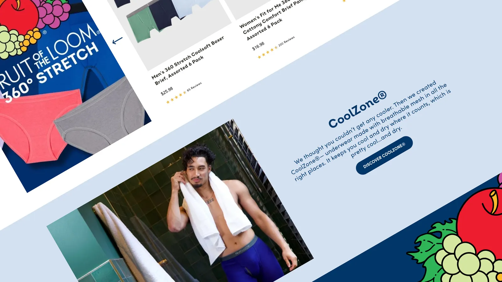
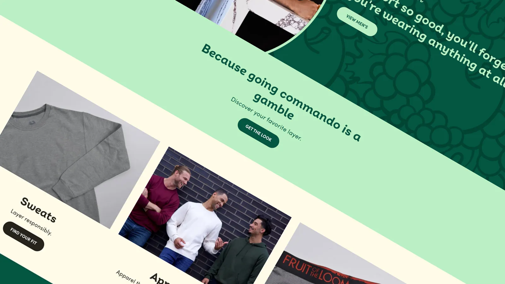
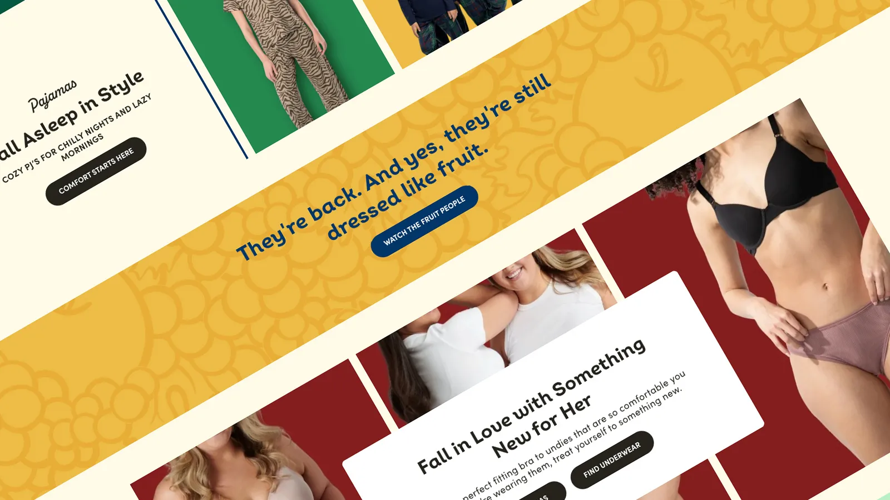
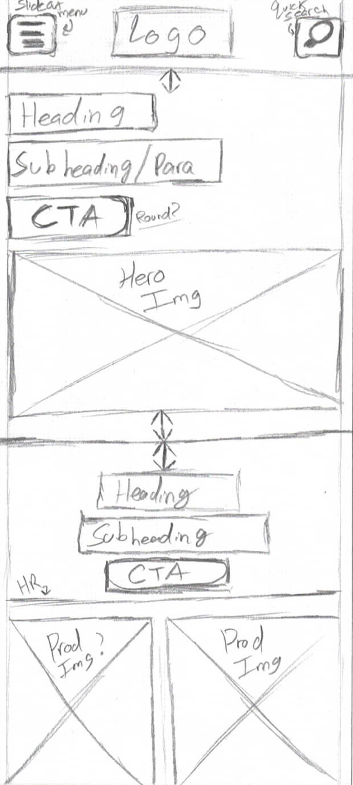
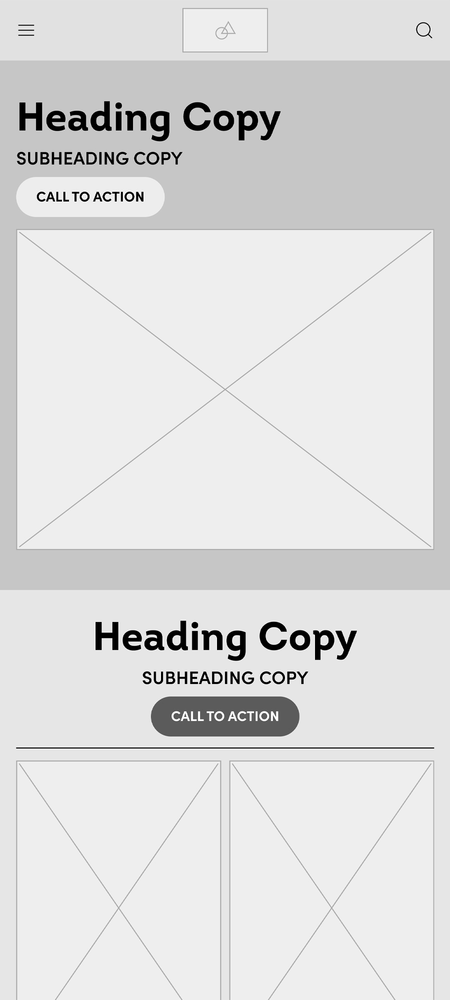
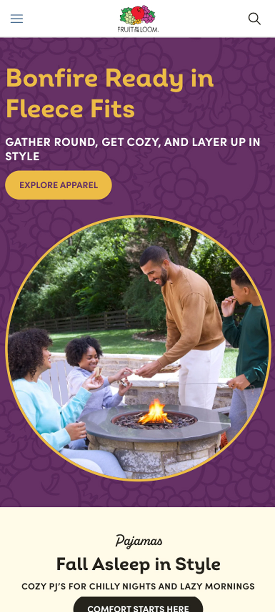

Fruit of the Loom
Brandsite refresh & platform migration
For Fruit of the Loom, we expanded the existing brand guide into a complete design system that brought consistency and clarity to our digital presence. The refreshed designs were translated into reusable ReactJS components, giving the site greater flexibility and scalability without starting from scratch. Behind the scenes, we transitioned the platform to a modern headless architecture, setting the stage for smoother performance and long-term growth. The end result is a polished, future-ready site that reflects the strength and energy of the brand.




Our approach focused on strengthening what was already in place, refining and modernizing the site for a smoother, more engaging experience.
With Fruit of the Loom, the challenge wasn’t to start over but to take what already existed and make it stronger. We worked closely with multiple teams to evaluate the site’s foundation, identifying what could be polished, what needed rethinking, and how the brand could present itself in a sharper, more consistent way.
From there, we introduced a refreshed design system that emphasized usability and scalability. The updated structure allowed the site to feel modern and responsive, while still honoring the brand’s established identity. By combining thoughtful design with a focus on performance, the result was a platform that looked fresh, worked smoothly, and could evolve with the brand’s future needs.
From day one, user experience was the game plan behind Fruit of the Loom’s refresh.
We started with quick sketches to reimagine the structure and flow before moving into polished mockups in Figma. Our goal was to transform a functional but clunky mobile experience into something clean, breathable, and intuitive. The old Fruit of the Loom site technically worked, but cramped layouts and distorted imagery made it feel anything but premium. Dulling the impact of a long lasting brand.



Revitalizing Fruit of the Loom’s site meant pairing a fresh layer of design with a complete rebuild of the underlying system, creating a platform that looked sharper and performed even better.
Utilizing my Figma expertise, we reimagined Fruit of the Loom’s digital presence with a refreshed look and a design system that felt modern yet true to the brand. While the visual update was closer to a new coat of paint than a full rebuild, the process was highly collaborative. Teams worked side by side through multiple rounds of feedback and iteration until the designs struck the right balance of consistency, usability, and flexibility.
Behind the scenes, the engineering effort was far more extensive. We transitioned the site onto a headless CommerceTools architecture, setting it up for long-term adaptability. Every element of the refreshed design was rebuilt as reusable ReactJS components, created from the ground up to bridge design with development. Accessibility standards guided the process, ensuring the site was not only sleek but also inclusive for all users.
The outcome is a platform that feels fresh, fast, and reliable across devices. By pairing a thoughtful visual refresh with a robust technical foundation, we delivered a digital experience that works harder for both the brand and its audience.